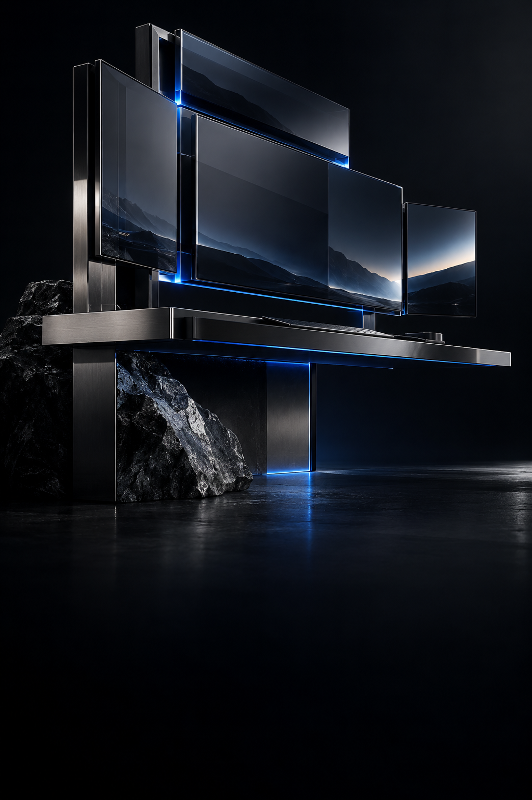
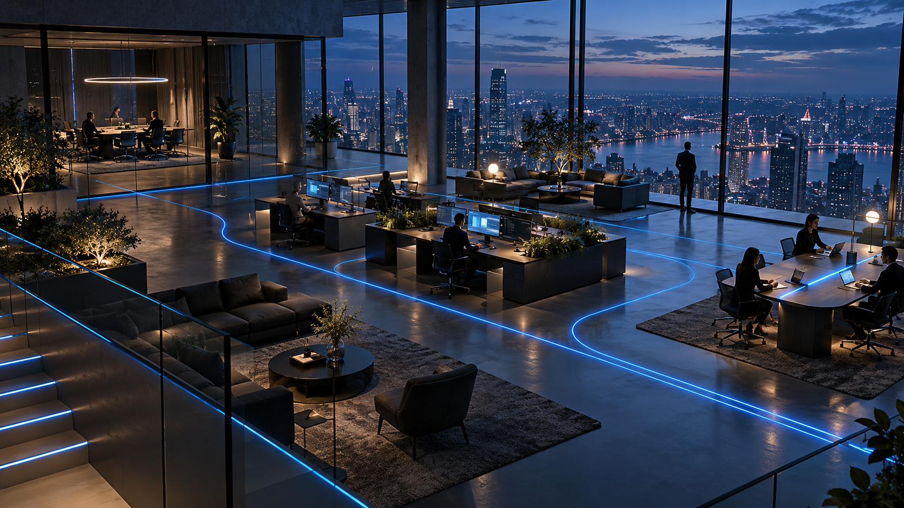

Informações
Pedidos, dados e documentos da sua operação.
Adaptamos seus processos para que funcionem de forma autônoma, com tecnologia de última geração.
Preparados para assumir tarefas do dia a dia, organizar informações e dar continuidade ao trabalho, com funções e limites definidos para a sua empresa.

Projetamos e desenvolvemos do zero plataformas, aplicativos e ferramentas de gestão para os processos e as regras da sua empresa.

Integramos pessoas, funcionários de IA e as plataformas da empresa para que as informações circulem e cada etapa do trabalho dê continuidade à próxima.
CADA PARTE TEM UM PAPEL
Pedidos, dados e documentos da sua operação.
Realizam tarefas seguindo as regras da empresa.
Plataformas criadas e integradas organizam o trabalho.
Acompanha os resultados e toma as decisões.
Informações, IA, tecnologia e pessoas trabalhando juntos.
CASES / RESULTADOS
RH
70%
menos tempo no fechamento mensal do RH.
Funções administrativas
60%
menos tempo nas funções administrativas de restaurantes.
Eficiência e receita
40%
menos tempo em rotinas da oficina.
de receita, mantendo o mesmo custo da operação.
Geração da folha
30%
menos tempo para gerar a folha de pagamento.
Custos com tecnologia
25%
de redução no custo com sistemas.
Resultados informados pela equipe Kobalt em operações específicas.
Vamos olhar para sua operaçãoNA ROTINA DA EMPRESA
Do trabalho de cada dia à gestão completa, construímos o que a sua operação precisa.
Podemos construir para sua operação
Podemos construir para sua operação
Podemos construir para sua operação
Podemos construir para sua operação
Podemos construir para sua operação
Podemos construir para sua operação
Mapeamos rotinas, regras e prioridades para definir o que precisa mudar.
Criamos funcionários de IA e plataformas sob medida para a sua operação.
Integramos as ferramentas e testamos o funcionamento com a equipe.
Acompanhamos o uso e os resultados para ajustar e evoluir a solução.
ANTES DE COMEÇAR
É uma IA preparada para executar um conjunto definido de tarefas dentro da empresa. Ela trabalha com as informações e os acessos necessários para sua função, seguindo as regras combinadas para o projeto.
É tecnologia projetada e desenvolvida para os processos da sua empresa. Criamos plataformas, aplicativos e software de gestão do zero, com as funções, regras e integrações de que a sua operação precisa.
Avaliamos primeiro o que você já utiliza. O projeto define o que pode ser conectado, o que precisa de ajustes e onde faz sentido construir algo novo.
A sua empresa. Definimos quais tarefas a IA pode executar e em quais situações entram aprovação ou decisão da sua equipe.
Por um diagnóstico gratuito e sem compromisso. Você conta onde o trabalho mais toma tempo, e a Kobalt avalia uma primeira frente de atuação e as conexões necessárias com o restante da operação.